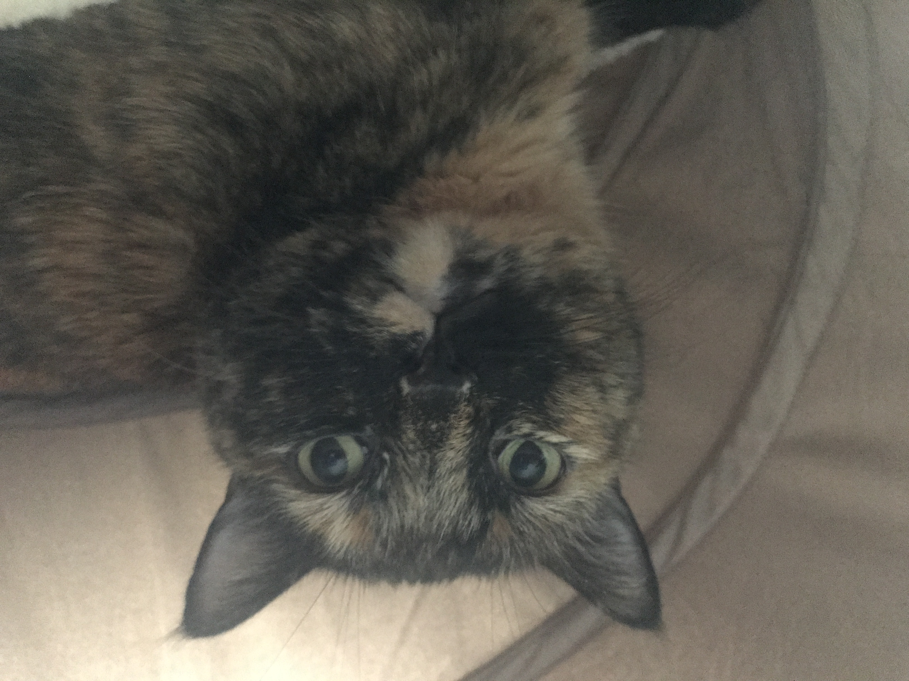

Today I had a conversation that I have needed to have for quite a while. Usually I try to stay optimistic and professional – something that perhaps every PhD student does -- when talking with my advisor. As a bit of background, I worked with my advisor for over two years during undergraduate and followed him to a new university to pursue a PhD. He is a great guy, a great boss, and it was a no-brainer to stay with the lab for a few more years. We are similar in that new and exciting topics can completely enthrall us. Once, we made awkward eye contact at 5 AM when I was walking to the lab and he was pulling in from a two-hour commute to his office. In the last few months, though, I have been feeling spread quite thin between these ideas.
Since starting my PhD I’ve worked on two main (funded) projects, a number of abandoned side projects, and handled IT and training of new students for the lab. Back in May, my advisor wanted me to start a sensitivity analysis and publish it by the end of the summer. No pressure. Unfortunately, the collaboration it requires has been quite slow and every time I bring up the progress (about every two weeks) my advisor says he “doesn’t want it turning into [collaborator’s] dissertation” and asks if we should abandon it.
If I keep abandoning work, how will I ever get a publication? Publications for PhD students are like gold stars for kindergarteners. When you go to apply for a job, publications will whitewash a subpar GPA. If you want to work in academia, you had better hope your publication list is stellar. I am not alone in judging my progress (read: self-worth) based on my number and quality of publications. So how could I keep abandoning work that might be publishable?
So, I finally told my advisor as much. I listed out three past projects we had abandoned. The first he had not let me complete as part of a class project because “double-dipping would be unethical.” For reference, I completely agree. I explained the circumstances for the latest project regarding the current delays and what we had learned so far. While writing this I realize that at the time, perhaps I was desperate. Yet, by the end of the meeting one project was agreed to be completed for an upcoming conference paper, my advisor told me to focus on the important tasks only, and he told me that he doesn’t want me to be stressed about it.
My advisor is a great guy, a great boss, and I need a manager like him. Once the the online meeting ended, I bawled for ten minutes straight. I still don’t understand why (I feel like a fraud) but I poured myself a heavy Dark and Stormy –homebrewed ale wouldn’t cut it-- and then worked on homework for backwards propagation of electromagnetic waves for three hours. After that, I told myself that writing a first blog post couldn’t possibly be as hard.
I've been thinking about starting a blog, so this post and the next few are a sort of trial run. Admittedly, I am a boring person living a boring life and I havne't thought about anything in particular I have to share. However, if the blogging does work out, then maybe someone will want to know my cat. She was adopted from a rescue a few months ago at six and a half years old. She was shy and skittish for the first few months and, to be honest, that probably hasn't changed. While I'm working from home, though, she provides excellent company.
